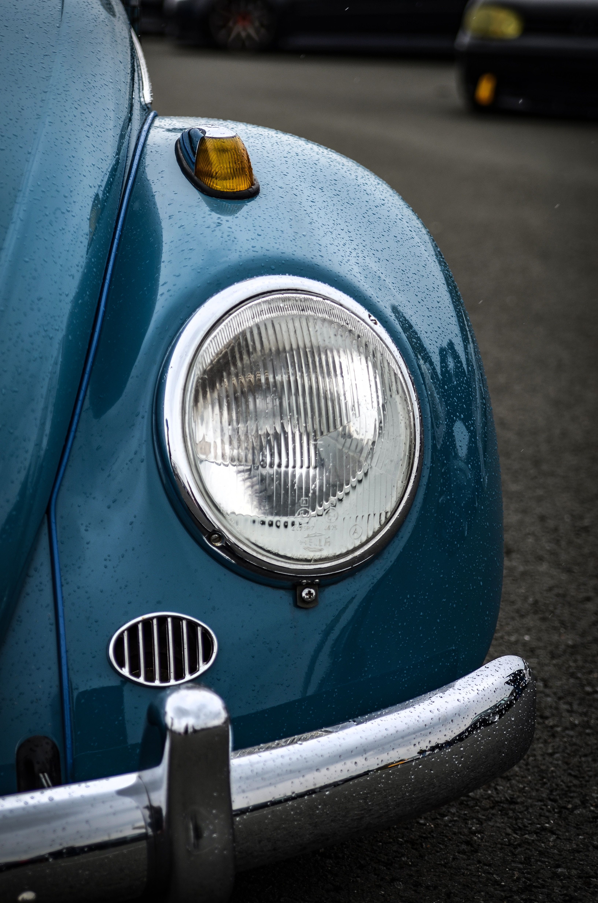
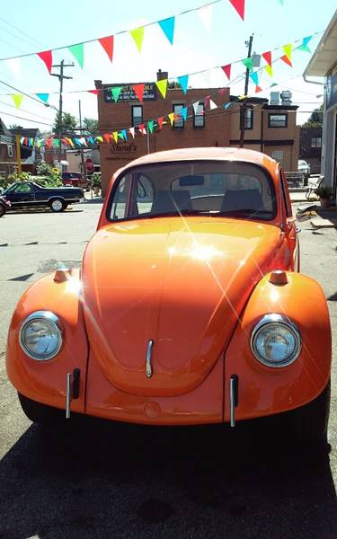

1965
1965


Volkswagen Beetle
For the first time in a long time, the 1965 Volkswagen Beetle actually looked a little different than its predecessors. That
was due primarily to the fact that VW enlarged the Beetle's windows and windshield, which helped improve
outward visibility for drivers and passengers